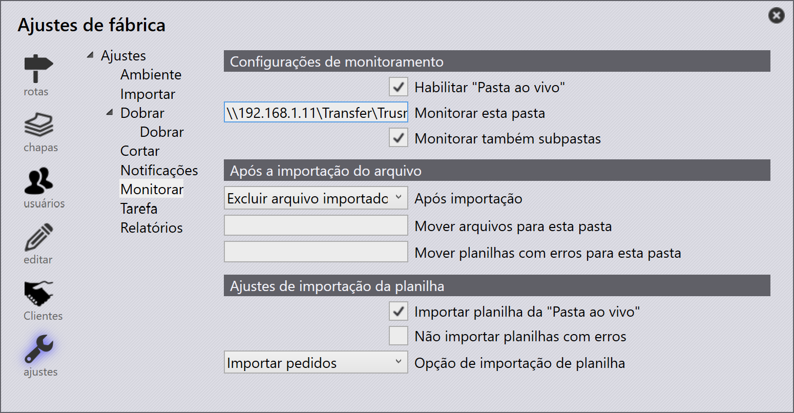
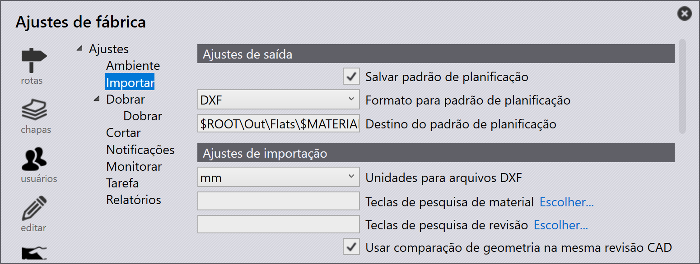

Importar peças
Antes de importar peças, certifique-se de que os formatos de arquivo sejam compatíveis com o TruSmartCAM. Consulte supported file formats para mais detalhes.
| Se o material e a espessura não forem mapeados para a peça após a importação, atribua o material usando o painel da peça. |
Métodos de importação
Existem três métodos para importar peças para a Biblioteca de Peças:
-
Importar via arquivo
-
Arrastar e soltar
-
Pasta monitorada (Watch folder)
Importar via arquivo
Um arquivo de peça 2D ou 3D pode ser importado para a Biblioteca de Peças usando a opção Importar peças.
-
Clique nos ícones abrir na barra de comandos e selecione a opção Importar peças.
-
O diálogo Open aparece — selecione qualquer arquivo CAD (2D ou 3D).
-
Uma visualização do arquivo CAD selecionado é exibida.
-
Selecione a peça necessária e clique em Open.
-
O sistema aplica o ferramental automaticamente na peça para todas as máquinas disponíveis com o status de ferramental atualizado.
Arrastar e soltar
-
Arraste e solte um arquivo de peça diretamente na Biblioteca de Peças do TruSmartCAM.
Pasta monitorada (Watch folder)
As configurações de Watch permitem monitorar uma pasta em busca de novos arquivos e importá-los automaticamente para a Biblioteca de Peças.
Para configurar, consulte a página Watch settings.
|

Configuração de importação
Usar comparação de geometria na mesma revisão CAD
Ao importar uma peça com a mesma revisão CAD, o TruSmartCAM pode comparar a geometria do arquivo CAD com a peça existente.
-
Para habilitar isso, configure as Teclas de pesquisa de revisão (por exemplo, REV) em fábrica → ajustes →Importação/Exportação. Em seguida, habilite a opção Usar comparação de geometria na mesma revisão CAD.

| A comparação de geometria na mesma revisão CAD funciona apenas quando as Teclas de pesquisa de revisão estão configuradas. |
-
Agora, importe uma peça para a biblioteca de peças com uma revisão específica (por exemplo, Revision 1).
-
A mesma peça é importada novamente com o mesmo valor de revisão.
-
O TruSmartCAM compara a geometria do arquivo CAD recém-importado com a peça existente.
-
Se uma diferença de geometria for detectada, o TruSmartCAM exibe um prompt perguntando se deseja:
-
Substituir a peça existente pela nova geometria, mantendo o mesmo valor de revisão.
-
Pular a importação, mantendo a peça existente e sua geometria.
-
Isso permite que os usuários atualizem a geometria da peça sem alterar o valor da revisão, ao mesmo tempo em que mantêm o controle sobre a substituição das peças existentes.
As peças importadas são adicionadas automaticamente à biblioteca para uso posterior. Para mais informações, consulte Library.